第 4 章 线性回归
本章的R代码见：https://rstudio.cloud/project/798617
4.1 一元线性模型
The linear model is given by
\[y_i=\beta_0+\beta_1x_i+\epsilon_i,\ i=1,\dots,n.\]
- \(\epsilon_i\) are random (need some assumptions)
- \(x_i\) are fixed (independent/predictor variable)
- \(y_i\) are random (dependent/response variable)
- \(\beta_0\) is the intercept
- \(\beta_1\) is the slope
4.1.1 最小二乘估计
Choose \(\beta_0,\beta_1\) to minimize
\[Q(\beta_0,\beta_1) = \sum_{i=1}^n(y_i-\beta_0-\beta_1x_i)^2.\]
The minimizers \(\hat\beta_0,\hat\beta_1\) satisfy
\[ \begin{cases} \frac{\partial Q}{\partial \beta_0} = -2\sum_{i=1}^n(y_i-\hat\beta_0-\hat\beta_1x_i)=0\\ \frac{\partial Q}{\partial \beta_1} = -2\sum_{i=1}^n(y_i-\hat\beta_0-\hat\beta_1x_i)x_i=0 \end{cases} \]
This gives
\[\hat\beta_1 = \frac{\sum_{i=1}^n(y_i-\bar y)x_i}{\sum_{i=1}^n(x_i-\bar x)x_i},\ \hat\beta_0=\bar y-\hat\beta_1\bar x.\]
Define
\[\ell_{xx} = \sum_{i=1}^n(x_i-\bar x)^2,\] \[\ell_{yy} = \sum_{i=1}^n(y_i-\bar y)^2,\] \[\ell_{xy} = \sum_{i=1}^n(x_i-\bar x)(y_i-\bar y).\]
We thus have
\[\hat\beta_1 = \frac{\sum_{i=1}^n(y_i-\bar y)(x_i-\bar x)}{\sum_{i=1}^n(x_i-\bar x)(x_i-\bar x)}=\frac{\ell_{xy}}{\ell_{xx}}=\frac{1}{\ell_{xx}}\sum_{i=1}^n(x_i-\bar x)y_i.\]
Regression function: \(\hat y=\hat\beta_0+\hat\beta_1x\).
4.1.2 期望和方差
Assumption A1: \(E[\epsilon_i]=0,i=1,\dots,n\).
证明. \[\begin{align*} E[\hat \beta_1] &= \frac{1}{\ell_{xx}}\sum_{i=1}^n(x_i-\bar x)E[y_i]\\ &=\frac{1}{\ell_{xx}}\sum_{i=1}^n(x_i-\bar x)(\beta_0+\beta_1x_i)\\ &=\frac{\beta_0}{\ell_{xx}}\sum_{i=1}^n(x_i-\bar x)+\frac{\beta_1}{\ell_{xx}}\sum_{i=1}^n(x_i-\bar x)x_i\\ &=\frac{\beta_1}{\ell_{xx}}\sum_{i=1}^n(x_i-\bar x)(x_i-\bar x)\\ &=\beta_1 \end{align*}\]
\[\begin{align*} E[\hat \beta_0] &= E[\bar y-\hat\beta_1\bar x]=E[\bar y]-\beta_1\bar x=\beta_0+\beta_1\bar x-\beta_1\bar x=\beta_0. \end{align*}\]
Assumption A2: \(Cov(\epsilon_i,\epsilon_j)=\sigma^21\{i=j\}\).
定理 4.2 Under Assumption A2, we have
\[Var[\hat\beta_0] = \left(\frac 1n+\frac{\bar x^2}{\ell_{xx}}\right)\sigma^2,\]
\[Var[\hat\beta_1] =\frac{\sigma^2}{\ell_{xx}},\]
\[Cov(\hat\beta_0,\hat\beta_1) = \frac{-\bar x}{\ell_{xx}}\sigma^2.\]
证明. Since \(Cov(\epsilon_i,\epsilon_j)=0\) for any \(i\neq j\), \(Cov(y_i,y_j)=0\). We thus have
\[\begin{align*} Var[\hat\beta_1] &= \frac{1}{\ell_{xx}^2}\sum_{i=1}^n(x_i-\bar x)^2Var[y_i]\\ &= \frac{\sigma^2}{\ell_{xx}^2}\sum_{i=1}^n(x_i-\bar x)^2=\frac{\sigma^2}{\ell_{xx}}. \end{align*}\]
We next show that \(Cov(\bar y,\hat \beta_1)=0\).
\[\begin{align*} Cov(\bar y,\hat \beta_1) &= Cov\left(\frac{1}{n}\sum_{i=1}^n y_i,\frac{1}{\ell_{xx}}\sum_{i=1}^n(x_i-\bar x)y_i\right)\\ &=\frac{1}{n\ell_{xx}}Cov\left(\sum_{i=1}^n y_i,\sum_{i=1}^n(x_i-\bar x)y_i\right)\\ &=\frac{1}{n\ell_{xx}}\sum_{i=1}^nCov(y_i,(x_i-\bar x)y_i)\\ &=\frac{1}{n\ell_{xx}}\sum_{i=1}^n(x_i-\bar x)\sigma^2 = 0. \end{align*}\]
\[Var[\hat\beta_0] = Var[\bar y-\hat\beta_1\bar x]=Var[\bar y]+Var[\hat \beta_1\bar x]=\frac{\sigma^2}{n}+\frac{\bar x^2\sigma^2}{\ell_{xx}}.\]
\[Cov(\hat\beta_0,\hat\beta_1) = Cov(\bar y-\hat\beta_1\bar x,\hat\beta_1) = -\bar x Var[\hat\beta_1]=\frac{-\bar x}{\ell_{xx}}\sigma^2.\]
So bigger \(n\) is better. Get a bigger sample size if you can. Smaller \(\sigma\) is better. The most interesting one is that bigger \(\ell_{xx}\) is better. The more spread out the \(x_i\) are the better we can estimate the slope \(\beta_1\). When you’re picking the \(x_i\), if you can spread them out more, then it is more informative.
4.1.3 误差项的方差的估计
For Assumption A2, it is common that the variance \(\sigma^2\) is unknown. The next theorem gives an unbiased estimate of \(\sigma^2\).
定义 4.1 The sum of squared errors (SSE) is defined by
\[S_e^2 = \sum_{i=1}^n(y_i-\hat\beta_0-\hat\beta_1x_i)^2.\]
定理 4.3 Let
\[\hat{\sigma}^2 := \frac{Q(\hat \beta_0,\hat\beta_1)}{n-2}=\frac{\sum_{i=1}^n(y_i-\hat\beta_0-\hat\beta_1x_i)^2}{n-2}=\frac{S_e^2}{n-2}.\] Under Assumptions A1 and A2, we have \(E[\hat\sigma^2]=\sigma^2\).证明. Let \(\hat y_i = \hat\beta_0+\hat\beta_1x_i=\bar y+\hat\beta_1(x_i-\bar x)\).
\[\begin{align*} E[Q(\hat \beta_0,\hat\beta_1)] &= \sum_{i=1}^nE[(y_i-\hat y_i)^2]=\sum_{i=1}^nVar[y_i-\hat y_i]+(E[y_i]-E[\hat y_i])^2\\ &=\sum_{i=1}^n[Var[y_i]+Var[\hat y_i]-2Cov(y_i,\hat y_i)]. \end{align*}\]
\[\begin{align*} Var[\hat y_i]&= Var[\hat\beta_0+\hat\beta_1x_i]=Var[\bar y+\hat\beta_1(x_i-\bar x)]\\ &=Var[\bar y]+(x_i-\bar x)^2Var[\hat\beta_1]\\ &=\frac{\sigma^2}{n}+\frac{(x_i-\bar x)^2\sigma^2}{\ell_{xx}}. \end{align*}\]
\[\begin{align*} Cov(y_i,\hat y_i) &= Cov(\beta_0+\beta_1x_i+\epsilon_i, \bar y+\hat\beta_1(x_i-\bar x))\\ &=Cov(\epsilon_i,\bar y)+(x_i-\bar x)Cov(\epsilon_i,\hat\beta_1)\\ &=\frac{\sigma^2}{n}+\frac{(x_i-\bar x)^2\sigma^2}{\ell_{xx}}. \end{align*}\]
As a result, we have
\[E[Q(\hat \beta_0,\hat\beta_1)] = \sum_{i=1}^n \left[\sigma^2-\frac{\sigma^2}{n}-\frac{(x_i-\bar x)^2\sigma^2}{\ell_{xx}}\right]=(n-2)\sigma^2.\]
4.1.4 抽样分布定理
Assumption B: \(\epsilon_i\stackrel{iid}{\sim}N(0,\sigma^2),i=1,\dots,n\).
Assumption B leads to Assumptions A1 and A2.
定理 4.4 Under Assumption B, we have
\(\hat\beta_0\sim N(\beta_0,(\frac 1n+\frac{\bar x^2}{\ell_{xx}})\sigma^2)\)
\(\hat\beta_1\sim N(\beta_1,\frac{\sigma^2}{\ell_{xx}})\)
\(\frac{(n-2)\hat\sigma^2}{\sigma^2}=\frac{S_e^2}{\sigma^2}\sim \chi^2(n-2)\)
\(\hat\sigma^2\) is independent of \((\hat\beta_0,\hat\beta_1)\).
It is \(n-2\) degrees of freedom because we have fit two parameters to the \(n\) data points.
4.1.5 置信区间与假设检验
For known \(\sigma\) we can make tests and confidence intervals using
\[\frac{\hat\beta_1-\beta_1}{\sigma/\sqrt{\ell_{xx}}}\sim N(0,1).\]
The \(100(1-\alpha)\%\) confidence interval for \(\beta_1\) is given by \(\hat\beta_1\pm u_{1-\alpha/2}\sigma/\sqrt{\ell_{xx}}\). For testing
\[H_0:\beta_1=\beta_1^*\ vs.\ H_1:\beta_1\neq\beta_1^*,\]
we reject \(H_0\) if \(|\hat\beta_1-\beta_1^*|>u_{1-\alpha/2}\sigma/\sqrt{\ell_{xx}}\) with the most popular hypothesized value being \(\beta_1^*=0\) (i.e., the regession function is significant or not at significance level \(\alpha\).)
In the more realistic setting of unknown \(\sigma\), so long as \(n \ge 3\), using claims (2-4) gives
\[\frac{\hat\beta_1-\beta_1}{\hat{\sigma}/\sqrt{\ell_{xx}}}\sim t(n-2).\]
The \(100(1-\alpha)\%\) confidence interval for \(\beta_1\) is \(\hat\beta_1\pm t_{1-\alpha/2}(n-2)\hat{\sigma}/\sqrt{\ell_{xx}}\). For testing
\[H_0:\beta_1=\beta_1^*\ vs.\ H_1:\beta_1\neq\beta_1^*,\]
we reject \(H_0\) if \(|\hat\beta_1-\beta_1^*|>t_{1-\alpha/2}(n-2)\hat\sigma/\sqrt{\ell_{xx}}\).
For drawing inferences about \(\beta_0\), we can use \[\frac{\hat\beta_0-\beta_0}{\sigma\sqrt{1/n+\bar x^2/\ell_{xx}}}\sim N(0,1),\]
\[\frac{\hat\beta_0-\beta_0}{\hat\sigma\sqrt{1/n+\bar x^2/\ell_{xx}}}\sim t(n-2).\]
The \(100(1-\alpha)\%\) confidence interval for \(\sigma^2\) is
\[\left[\frac{(n-2)\hat\sigma^2}{\chi_{1-\alpha/2}^2(n-2)},\frac{(n-2)\hat\sigma^2}{\chi_{\alpha/2}^2(n-2)}\right]=\left[\frac{S_e^2}{\chi_{1-\alpha/2}^2(n-2)},\frac{S_e^2}{\chi_{\alpha/2}^2(n-2)}\right].\]
4.1.6 案例分析1
A manufacturer of air conditioning units is having assembly problems due to the failure of a connecting rod (连接杆) to meet finished-weight specifications. Too many rods are being completely tooled, then rejected as overweight. To reduce that cost, the company’s quality-control department wants to quantify the relationship between the weight of the finished rod, \(y\), and that of the rough casting (毛坯铸件), \(x\). Castings likely to produce rods that are too heavy can then be discarded before undergoing the final (and costly) tooling process. The data are displayed below.
rod = data.frame(
id = seq(1:25),
rough_weight = c(2.745, 2.700, 2.690, 2.680, 2.675,
2.670, 2.665, 2.660, 2.655, 2.655,
2.650, 2.650, 2.645, 2.635, 2.630,
2.625, 2.625, 2.620, 2.615, 2.615,
2.615, 2.610, 2.590, 2.590, 2.565),
finished_weight = c(2.080, 2.045, 2.050, 2.005, 2.035,
2.035, 2.020, 2.005, 2.010, 2.000,
2.000, 2.005, 2.015, 1.990, 1.990,
1.995, 1.985, 1.970, 1.985, 1.990,
1.995, 1.990, 1.975, 1.995, 1.955)
)
knitr::kable(rod, caption = "rough weight vs. finished weight")| id | rough_weight | finished_weight |
|---|---|---|
| 1 | 2.745 | 2.080 |
| 2 | 2.700 | 2.045 |
| 3 | 2.690 | 2.050 |
| 4 | 2.680 | 2.005 |
| 5 | 2.675 | 2.035 |
| 6 | 2.670 | 2.035 |
| 7 | 2.665 | 2.020 |
| 8 | 2.660 | 2.005 |
| 9 | 2.655 | 2.010 |
| 10 | 2.655 | 2.000 |
| 11 | 2.650 | 2.000 |
| 12 | 2.650 | 2.005 |
| 13 | 2.645 | 2.015 |
| 14 | 2.635 | 1.990 |
| 15 | 2.630 | 1.990 |
| 16 | 2.625 | 1.995 |
| 17 | 2.625 | 1.985 |
| 18 | 2.620 | 1.970 |
| 19 | 2.615 | 1.985 |
| 20 | 2.615 | 1.990 |
| 21 | 2.615 | 1.995 |
| 22 | 2.610 | 1.990 |
| 23 | 2.590 | 1.975 |
| 24 | 2.590 | 1.995 |
| 25 | 2.565 | 1.955 |
Consider the linear model
\[y_i=\beta_0+\beta_1x_i+\epsilon_i,\ \epsilon_i\stackrel{iid}{\sim}N(0,\sigma^2).\]
The observed data gives \(\bar x = 2.643\), \(\bar y=2.0048\), \(\ell_{xx}=0.0367\), \(\ell_{xy}=0.023565\), \(\hat\sigma = 0.0113\). The least square estimates are
\[\hat\beta_1=\frac{\ell_{xy}}{\ell_{xx}}=\frac{0.023565}{0.0367}=0.642,\ \hat\beta_0=\bar y-\hat\beta_1\bar x=0.308.\]
The regession function \(\hat y = 0.308+0.642 x\); see the blue line given below.
attach(rod)
par(mar=c(4,4,1,0.5))
plot(rough_weight,finished_weight,type="p",pch=16,
xlab = "Rough Weight",ylab = "Finished Weight")
lm.rod = lm(finished_weight~rough_weight)
abline(coef(lm.rod),col="blue")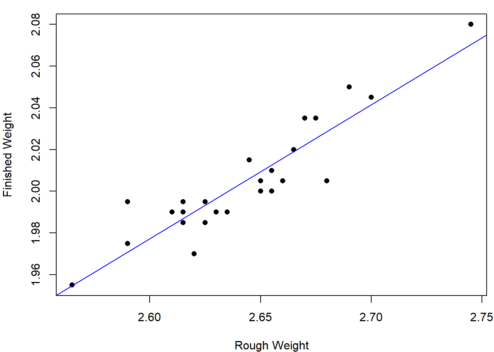
##
## Call:
## lm(formula = finished_weight ~ rough_weight)
##
## Residuals:
## Min 1Q Median 3Q Max
## -0.023558 -0.008242 0.001074 0.008179 0.024231
##
## Coefficients:
## Estimate Std. Error t value Pr(>|t|)
## (Intercept) 0.30773 0.15608 1.972 0.0608 .
## rough_weight 0.64210 0.05905 10.874 1.54e-10 ***
## ---
## Signif. codes: 0 '***' 0.001 '**' 0.01 '*' 0.05 '.' 0.1 ' ' 1
##
## Residual standard error: 0.01131 on 23 degrees of freedom
## Multiple R-squared: 0.8372, Adjusted R-squared: 0.8301
## F-statistic: 118.3 on 1 and 23 DF, p-value: 1.536e-104.1.7 拟合的评估
As an aid in assessing the quality of the fit, we will make extensive use of the residuals, which are the differences between the observed and fitted values:
\[\hat \epsilon_i = y_i-\hat\beta_0-\hat\beta_1x_i,\ i=1,\dots,n.\]
It is most useful to examine the residuals graphically. Plots of the residuals versus the \(x\) values may reveal systematic misfit or ways in which the data do not conform to the fitted model. Ideally, the residuals should show no relation to the \(x\) values, and the plot should look like a horizontal blur. The residuals for case study 1 are plotted below.
par(mar=c(4,4,2,1))
plot(lm.rod$fitted.values,lm.rod$residuals,"p",
xlab="Fitted values",ylab = "Residuals")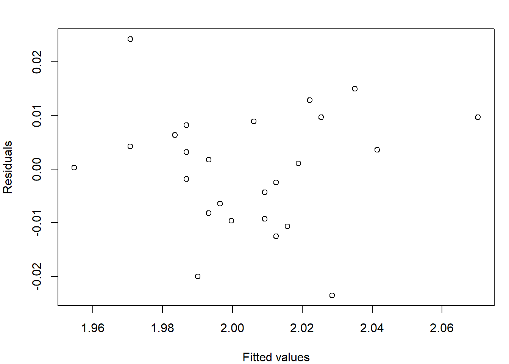
Standardized Residuals are graphed below. The key command is rstandard.
par(mar=c(4,4,2,1))
plot(lm.rod$fitted.values,rstandard(lm.rod),"p",
xlab="Fitted values",ylab = "Standardized Residuals")
abline(h=c(-2,2),lty=c(5,5))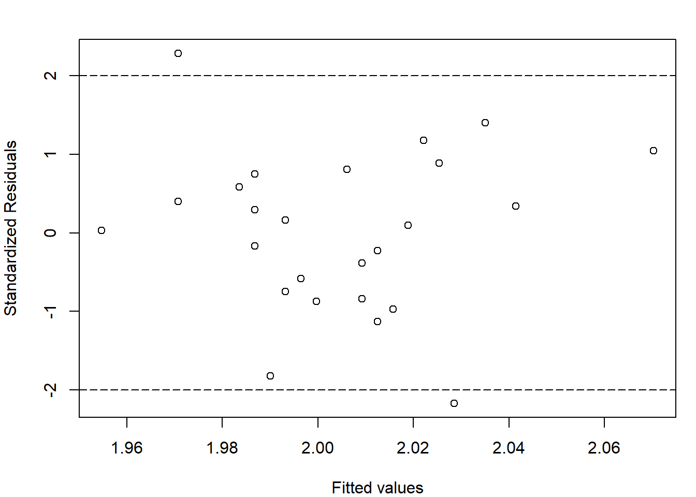
4.1.8 预测
Drawing Inferences about \(E[y_{n+1}]\)
For a given \(x_{n+1}\), we want to estimate the expected value of \(y_{n+1}\), i.e., \(E[y_{n+1}]=\beta_0+\beta_1x_{n+1}.\) A natural unbiased estimate is \(\hat y_{n+1} = \hat\beta_0+\hat\beta_1x_{n+1}\). From the proof of Theorem 4.3, we have the variance
\[Var[\hat y_{n+1}] = \left(\frac{1}{n}+\frac{(x_{n+1}-\bar x)^2}{\ell_{xx}}\right)\sigma^2.\]
Under Assumption B, by Theorem 4.4, we have
\[\hat y_{n+1}\sim N(\beta_0+\beta_1x_{n+1},(1/n+(x_{n+1}-\bar x)^2/\ell_{xx})\sigma^2),\]
\[\frac{\hat y_{n+1}-E[y_{n+1}]}{\hat{\sigma}\sqrt{1/n+(x_{n+1}-\bar x)^2/\ell_{xx}}}\sim t(n-2)\]
We thus have the following results.
定理 4.5 Suppose Assumption B is satisfied. Then we have
\[\hat y_{n+1} = \hat\beta_0+\hat\beta_1x_{n+1} \sim N(\beta_0+\beta_1x_{n+1},[1/n+(x_{n+1}-\bar x)^2/\ell_{xx}]\sigma^2).\]
A \(100(1−\alpha)\%\) confidence interval for \(E[y_{n+1}]=\beta_0+\beta_1x_{n+1}\) is given by
\[\hat y_{n+1}\pm t_{1-\alpha/2}(n-2)\hat{\sigma}\sqrt{\frac{1}{n}+\frac{(x_{n+1}-\bar x)^2}{\ell_{xx}}}.\]
Notice from the formula in Theorem 4.5 that the width of a confidence interval for \(E[y_{n+1}]\) increases as the value of \(x_{n+1}\) becomes more extreme. That is, we are better able to predict the location of the regression line for an \(x_{n+1}\)-value close to \(\bar x\) than we are for \(x_{n+1}\)-values that are either very small or very large.
For case study 1, we plot the lower and upper limits for the \(95\%\) confidence interval for \(E[y_{n+1}]\).
x = seq(2.5,2.8,by=0.001)
newdata = data.frame(rough_weight= x)
pred_x = predict(lm.rod,newdata,interval = "confidence")
par(mar=c(4,4,2,1))
matplot(x,pred_x,type="l",lty = c(1,5,5),
col=c("blue","red","red"),lwd=2,
xlab="Rough Weight",ylab="Finished Weight")
abline(v=mean(rough_weight),lty=5)
points(rough_weight,finished_weight,pch=16)
legend(2.5,2.1,c("Fitted","Lower limit","Upper limit"),
lty = c(1,5,5),col=c("blue","red","red"))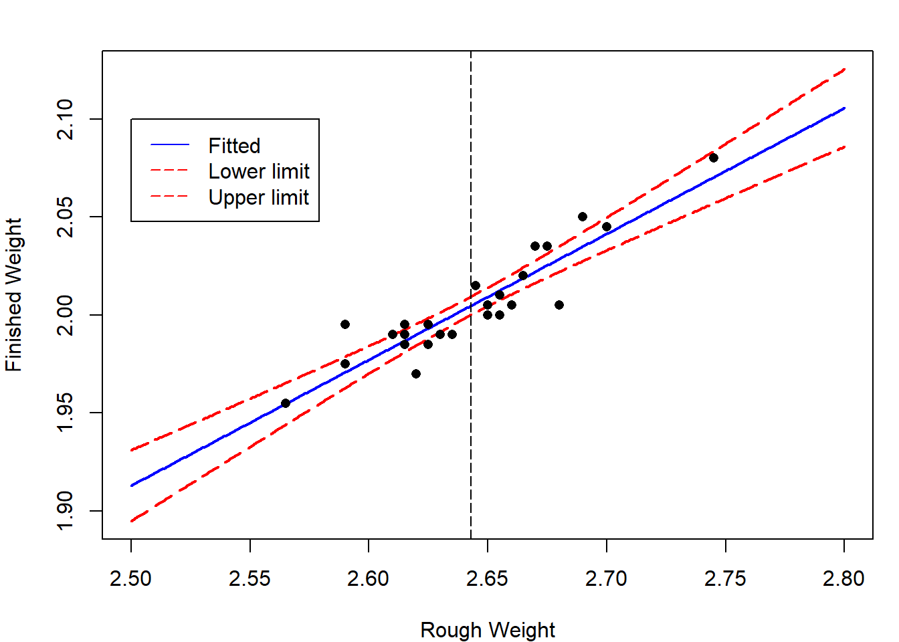
library(ggplot2)
ggplot(rod,aes(x=rough_weight,y=finished_weight)) +
geom_smooth(method = lm) +
geom_point()图 4.1: CI by ggplot
Drawing Inferences about Future Observations
We now give a prediction interval for the future observation \(y_{n+1}\) rather than its expected value \(E[y_{n+1}]\). Note that here \(y_{n+1}\) is no longer a fixed parameter, which is assumed to be independent of \(y_i\)’s. A prediction interval is a range of numbers that contains \(y_{n+1}\) with a specified probability. Consider \(y_{n+1}-\hat y_{n+1}\). If Assumption A1 is satisfied, then
\[E[y_{n+1}-\hat y_{n+1}] = E[y_{n+1}]-E[\hat y_{n+1}]= 0.\]
If Assumption A2 is satisfied, then
\[Var[y_{n+1}-\hat y_{n+1}] = Var[y_{n+1}]+Var[\hat y_{n+1}]=\left(1+\frac{1}{n}+\frac{(x_{n+1}-\bar x)^2}{\ell_{xx}}\right)\sigma^2.\]
If Assumption B is satisfied, \(y_{n+1}-\hat y_{n+1}\) is then normally distributed.
定理 4.6 Suppose Assumption B is satisfied. Let \(y_{n+1}=\beta_0+\beta_1x_{n+1}+\epsilon\), where \(\epsilon\sim N(0,\sigma^2)\) is independent of \(\epsilon_i\)’s. A \(100(1−\alpha)\%\) prediction interval for \(y\) is given by
\[\hat y_{n+1}\pm t_{1-\alpha/2}(n-2)\hat{\sigma}\sqrt{1+\frac{1}{n}+\frac{(x_{n+1}-\bar x)^2}{\ell_{xx}}}.\]
For case study 1, we plot the lower and upper limits for the \(95\%\) prediction interval for \(y_{n+1}\).
x = seq(2.5,2.8,by=0.001)
newdata = data.frame(rough_weight= x)
pred_x = predict(lm.rod,newdata,interval = "prediction")
par(mar=c(4,4,2,1))
matplot(x,pred_x,type="l",lty = c(1,5,5),
col=c("blue","red","red"),lwd=2,
xlab="Rough Weight",ylab="Finished Weight")
abline(v=mean(rough_weight),lty=5)
points(rough_weight,finished_weight,pch=16)
legend(2.5,2.1,c("Fitted","Lower limit","Upper limit"),
lty = c(1,5,5),col=c("blue","red","red"))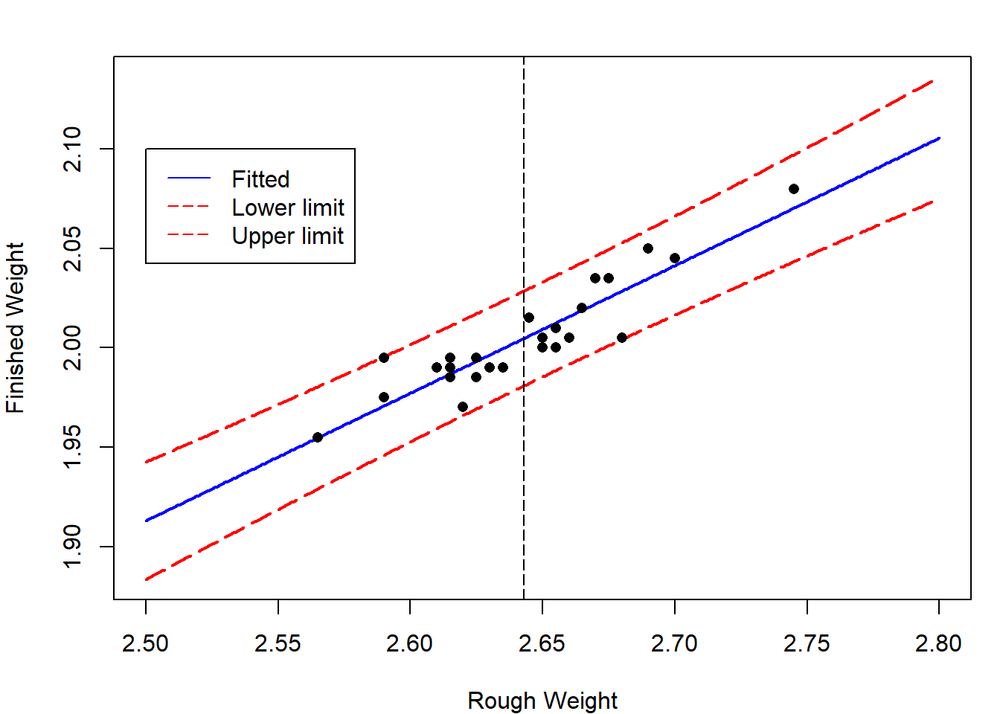
4.1.9 控制
How to control \(y_{n+1}\)?
Consider case study 1 again. Castings likely to produce rods that are too heavy can then be discarded before undergoing the final (and costly) tooling process. The company’s quality-control department wants to produce the rod \(y_{n+1}\) with weights no large than 2.05 with probablity no less than 0.95. How to choose the rough casting?
Now we want \(y_{n+1}\le y_0=2.05\) with probability \(1-\alpha\). Similarly to Theorem 4.6, we can construct one-side confidence interval for \(y_{n+1}\), that is
\[\bigg(-\infty,\hat y_{n+1}+t_{1-\alpha}(n-2)\hat{\sigma}\sqrt{1+\frac{1}{n}+\frac{(x_{n+1}-\bar x)^2}{\ell_{xx}}}\bigg].\] This implies \[\hat\beta_0+\hat\beta_1x_{n+1}+t_{1-\alpha}(n-2)\hat{\sigma}\sqrt{1+\frac{1}{n}+\frac{(x_{n+1}-\bar x)^2}{\ell_{xx}}}\le y_0.\]
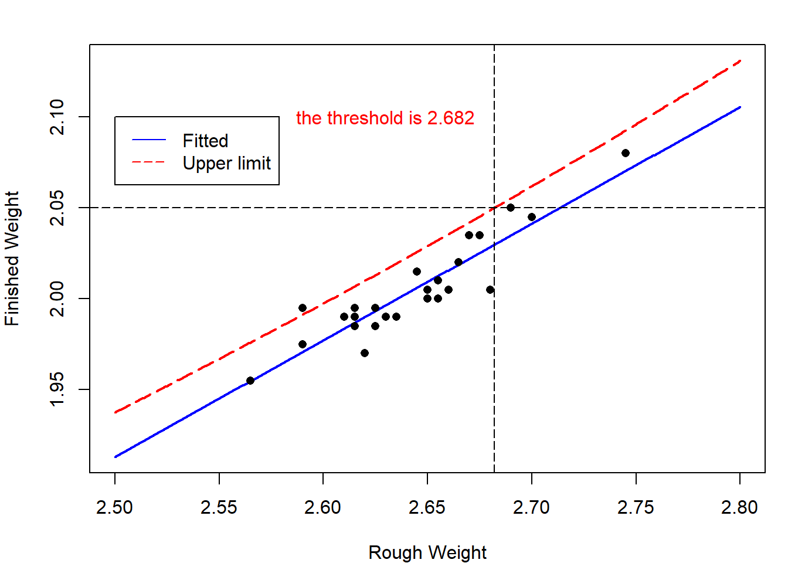
4.2 多元线性模型
With problems more complex than fitting a straight line, it is very useful to approach the linear least squares analysis via linear algebra. Consider a model of the form
\[y_i=\beta_0+\beta_1x_{i1}+\beta_2x_{i2}+\dots+\beta_{p-1}x_{i,p-1}+\epsilon_i,\ i=1,\dots,n.\]
Let \(Y=(y_1,\dots,y_n)^\top\), \(\beta=(\beta_0,\dots,\beta_{p-1})^\top\), \(\epsilon=(\epsilon_1,\dots,\epsilon_n)^\top\), and let \(X\) be the \(n\times p\) matrix
\[ X= \left[ \begin{matrix} 1 & x_{11} & x_{12} & \cdots & x_{1,p-1}\\ 1 & x_{21} & x_{22} & \cdots & x_{2,p-1}\\ \vdots & \vdots & \vdots & \vdots & \vdots & \\ 1 & x_{n1} & x_{n2} & \cdots & x_{n,p-1}\\ \end{matrix} \right]. \]
The model can be rewritten as \[Y=X\beta+\epsilon,\]
the matrix \(X\) is called the design matrix,
assume that \(p<n\).
The least squares problem can then be phrased as follows: Find \(\beta\) to minimize
\[Q(\beta)=\sum_{i=1}^n(y_i-\beta_0-\beta_1x_{i1}-\dots-\beta_{p-1}x_{i,p-1})^2:=||Y-X\beta||^2,\]
where \(||\cdot||\) is the Euclidean norm.
Note that \[Q=(Y-X\beta)^\top(Y-X\beta) = Y^\top Y-2Y^\top X\beta+\beta^\top X^\top X\beta.\] If we differentiate \(Q\) with respect to each \(\beta_i\) and set the derivatives equal to zero, we see that the minimizers \(\hat\beta_0,\dots,\hat\beta_{p-1}\) satisfy
\[\frac{\partial Q}{\partial \beta_i}=-2(Y^\top X)_i+2(X^{\top}X)_{i\cdot}\hat\beta=0.\]
We thus arrive at the so-called normal equations: \[X^\top X\hat\beta = X^\top Y.\]
If the design matrix \(X^\top X\) is nonsingular, the formal solution is
\[\hat\beta = (X^\top X)^{-1}X^\top Y.\]
The following lemma gives a criterion for the existence and uniqueness of solutions of the normal equations.
证明. First suppose that \(X^\top X\) is singular. There exists a nonzero vector \(u\) such that \(X^\top Xu = 0\). Multiplying the left-hand side of this equation by \(u^\top\), we have \(0=u^\top X^\top Xu=(Xu)^\top (Xu)\) So \(Xu=0\), the columns of \(X\) are linearly dependent, and the rank of \(X\) is less than \(p\).
Next, suppose that the rank of \(X\) is less than \(p\) so that there exists a nonzero vector \(u\) such that \(Xu = 0\). Then \(X^\top Xu = 0\), and hence \(X^\top X\) is singular.In what follows, we assume that \(\mathrm{rank}(X)=p<n\).
4.2.1 期望和方差
Assumption A: Assume that \(E[\epsilon]=0\) and \(Var[\epsilon]=\sigma^2I_n\).
定理 4.7 Suppose that Assumption A is satisfied and \(\mathrm{rank}(X)=p<n\), we have
\(E[\hat\beta]=\beta,\)
\(Var[\hat\beta]=\sigma^2(X^\top X)^{-1}\).
证明. \[\begin{align*} E[\hat\beta]&= E[(X^\top X)^{-1}X^{\top}Y] \\ &= (X^\top X)^{-1}X^{\top}E[Y]\\ &=(X^\top X)^{-1}X^{\top}(X\beta)=\beta. \end{align*}\]
\[\begin{align*} Var[\hat\beta] &= Var[(X^\top X)^{-1}X^{\top}Y]\\ &=(X^\top X)^{-1}X^{\top}Var(Y)X(X^\top X)^{-1}\\ &=\sigma^2(X^\top X)^{-1}. \end{align*}\]
We used the fact that \(Var(AY) = AVar(Y)A^\top\) for any fixed matrix \(A\), and \(X^\top X\) and therefore \((X^\top X)^{-1}\) are symmetric.
4.2.2 误差项的方差的估计
定义 4.2 We give the following concepts.
The fitted values: \(\hat Y = X\hat\beta\)
The vector of residuals: \(\hat\epsilon = Y-\hat Y\)
The sum of squared errors (SSE): \(S_e^2=Q(\hat\beta)=||Y-\hat Y||^2=||\hat\epsilon||^2\)
Note that
\[\hat Y = X\hat\beta=X(X^\top X)^{-1}X^\top Y=:PY.\]
The projection matrix: \(P = X(X^\top X)^{-1}X^\top\)
The vector of residuals is then \(\hat\epsilon=(I_n-P)Y\). Two useful properties of \(P\) are given in the following lemma.
引理 4.2 Let \(P\) be defined as before. Then
\[P = P^\top=P^2,\]
\[I_n-P = (I_n-P)^\top=(I_n-P)^2.\]
We may think geometrically of the fitted values, \(\hat Y=X\hat\beta=PY\), as being the projection of \(Y\) onto the subspace spanned by the columns of \(X\).
The sum of squared residuals is then
\[\begin{align*} S_e^2 := ||\hat \epsilon||^2 = Y^\top(I_n-P)^\top(I_n-P)Y=Y^\top(I_n-P)Y. \end{align*}\]
Using Lemma 4.3, we have
\[\begin{align*} E[S_e^2]&= E[Y^\top(I_n-P)Y]=E[tr(Y^\top(I_n-P)Y)] \\&= E[tr((I_n-P)YY^\top)]=tr((I_n-P)E[YY^\top])\\ &=tr((I_n-P)(Var[Y]+E[Y]E[Y^\top]))\\ &=tr((I_n-P)(\sigma^2 I_n))+tr((I_n-P)X\beta\beta^\top X^\top)\\ &=\sigma^2(n-tr(P)), \end{align*}\]
where we used \((I_n-P)X=X-X(X^\top X)^{-1}X^\top X=0\). Using the cyclic property of the trace again gives
\[\begin{align*} tr(P)&= tr(X(X^\top X)^{-1}X^\top)\\ &=tr(X^\top X(X^\top X)^{-1})=tr(I_p)=p. \end{align*}\]
We therefore have \(E[S_e^2]=(n-p)\sigma^2\).
定理 4.8 Suppose that Assumption A is satisfied and \(\mathrm{rank}(X)=p<n\). Then
\[\hat\sigma^2 = \frac{S_e^2}{n-p}\]
is an unbiased estimate of \(\sigma^2\).
4.2.3 抽样分布定理
Assumption B: Assume that \(\epsilon\sim N(0,\sigma^2I_n)\).
定理 4.9 Suppose that Assumption B is satisfied and \(\mathrm{rank}(X)=p<n\), we have
\(\hat\beta \sim N(\beta, \sigma^2(X^\top X)^{-1})\),
\(\frac{(n-p)\hat\sigma^2}{\sigma^2}=\frac{S_e^2}{\sigma^2}\sim \chi^2(n-p)\),
\(\hat\epsilon\) is independent of \(\hat Y\),
\(S_e^2\) (or equivalently \(\hat\sigma^2\)) is independent of \(\hat\beta\).
证明. If Assumption B is satisfied, then \(Y = X\beta+\epsilon\sim N(X\beta,\sigma^2I_n)\). Recall that \(\hat\beta = (X^\top X)^{-1}X^\top Y\) is normally distributed. The mean and covariance are given in Theorem 4.7 since Assumption A is satisfied.
Let \(\xi_1,\dots,\xi_p\) be the orthonormal basis (标准正交基) of the subspace \(\mathrm{span}(X)\) of \(\mathbb{R}^n\) generated by the \(p\) columns of the matrix \(X\), and \(\xi_{p+1},\dots,\xi_n\) be the orthonormal basis of the orthogonal complement \(\mathrm{span}(X)^\perp\). Since \(\hat Y = X\hat\beta\in \mathrm{span}(X)\), there exists \(z_1,\dots,z_p\) such that
\[\hat Y = \sum_{i=1}^p z_i\xi_i.\]
On the other hand, by Lemma 4.2, we have
\[\hat \epsilon^\top X = Y^\top(I_n-P)^\top X= Y^\top (X-P X) = 0.\] As a result, \(\hat \epsilon\in \mathrm{span}(X)^\perp\). So there exsits \(z_{p+1},\dots,z_n\) such that
\[\hat \epsilon = \sum_{i=p+1}^n z_i\xi_i.\]
Let \(U = (\xi_1,\dots,\xi_n)\), then \(U\) is an orthogonal matrix, and let \(z=(z_1,\dots,z_n)^\top\). We thus have
\[Y = \hat Y+\hat\epsilon =\sum_{i=1}^nz_i\xi_i=Uz.\]
Therefore,
\[z=U^{-1}Y=U^\top Y\sim N(U^\top X\beta,U^\top(\sigma^2 I_n)U)=N(U^\top X\beta,\sigma^2 I_n).\]
This implies that \(z_i\) are independently normally distributed. So \(\hat Y\) and \(\hat\epsilon\) are independent. We next prove that \(E[z_i]=0\) for all \(i>p\). Let \(A=(\xi_{p+1},\dots,\xi_{n})\), then
\[A(z_{p+1},\dots,z_{n})^\top = \hat\epsilon=(I_n-P)Y.\]
This gives
\[\begin{align*} E[(z_{p+1},\dots,z_{n})^\top] &= E[A^\top (I_n-P)Y]\\ &=A^\top (I_n-P)E[Y]=A^\top (I_n-P)X\beta=0. \end{align*}\]
Consequently, \(z_i\stackrel{iid}{\sim} N(0,\sigma^2),i=p+1,\dots,n\), implying
\[S_e^2/\sigma^2 = \hat\epsilon^\top\hat\epsilon/\sigma^2 = \sum_{i=p+1}^n (z_i/\sigma)^2\sim \chi^2(n-p).\]
Note that \(S_e^2\) is a function of \(\hat\epsilon_i\) and \(\hat \beta = (X^\top X)^{-1}X^\top Y =(X^\top X)^{-1} X^\top \hat Y\) are linear conbinations of \(\hat y_i\). So \(S_e^2\) and \(\hat\beta\) are independent.
4.2.4 置信区间和假设检验
Let \(C=(X^\top X)^{-1}\) with entries \(c_{ij}\). Suppose that Assumption B is satisfied and \(\mathrm{rank}(X)=p<n\). If \(\sigma^2\) is known, for each \(\beta_i\), the \(100(1-\alpha)\%\) CI is
\[\hat\beta_i \pm u_{1-\alpha/2}\sigma\sqrt{c_{i+1,i+1}},\ i=0,\dots,p-1.\]
If \(\sigma^2\) is unknown, for each \(\beta_i\), the \(100(1-\alpha)\%\) CI is
\[\hat\beta_i \pm t_{1-\alpha/2}(n-p)\hat\sigma\sqrt{c_{i+1,i+1}}.\]
For testing hypothesis \(H_0:\beta_i= 0\ vs.\ H_1:\beta_i\neq 0\), the rejection region is
\[W = \{|\hat\beta_i|>t_{1-\alpha/2}(n-p)\hat\sigma\sqrt{c_{i+1,i+1}}\}.\]
The \(100(1-\alpha)\%\) CI for \(\sigma^2\) is
\[\left[\frac{(n-p)\hat\sigma^2}{\chi_{1-\alpha/2}^2(n-p)},\frac{(n-p)\hat\sigma^2}{\chi_{\alpha/2}^2(n-p)}\right]=\left[\frac{S_e^2}{\chi_{1-\alpha/2}^2(n-p)},\frac{S_e^2}{\chi_{\alpha/2}^2(n-p)}\right].\]
4.2.5 模型整体的显著性检验
Consider the hypothesis test:
\[H_0:\beta_1=\dots=\beta_{p-1}=0\ vs.\ H_1: \beta_{i^*}\neq 0\text{ for some }i^*\ge 1.\]
定义 4.4 We have the following concepts.
- The total sum of squares (SST):
\[S_T^2 = \sum_{i=1}^n(y_i-\bar Y)^2\]
- The sum of squares due to regression (SSR):
\[S_R^2 = \sum_{i=1}^n(\hat y_i-\bar Y)^2\]
- The sum of squared errors (SSE):
定理 4.10 We have the following decomposition:
\[S_T^2=S_R^2+S_e^2.\]证明. It is easy to see that
\[\begin{align*} S_T^2&=\sum_{i=1}^n (y_i-\bar Y)^2 = \sum_{i=1}^n (y_i-\hat y_i+\hat y_i-\bar Y)^2\\ &=\sum_{i=1}^n [(y_i-\hat y_i)^2+(\hat y_i-\bar Y)^2+2(y_i-\hat y_i)(\hat y_i-\bar Y)]\\ &=S_R^2+S_e^2 +2\sum_{i=1}^n (y_i-\hat y_i)(\hat y_i-\bar Y) \end{align*}\]
Using Lemma 4.2, we have
\[\begin{align*} \sum_{i=1}^n (y_i-\hat y_i)(\hat y_i-\bar Y) &= \hat\epsilon^\top\hat Y-\bar Y\sum_{i=1}^n \hat\epsilon_i\\ &= [(I_n-P)Y]^\top PY-\bar Y(1,1,\dots,1) (I_n-P)Y\\ &=Y^\top (I_n-P)PY - \bar Y[(1,1,\dots,1)-(1,1,\dots,1)P]Y\\ &= 0. \end{align*}\]
This is because \(PX = X\) and the first column of \(X\) is \((1,1,\dots,1)^\top\). This implies that \(P(1,1,\dots,1)^\top = (1,1,\dots,1)^\top\).定理 4.11 Suppose that Assumption B is satisfied and \(\mathrm{rank}(X)=p<n\), we have
\(S_R^2,S_e^2,\bar Y\) are independent, and
if the null \(H_0:\beta_1=\dots=\beta_{p-1}=0\) is true, \(S_R^2/\sigma^2\sim\chi^2(p-1)\).
证明. Using the same notations in the proof of Theorem 4.9. Since \((1,\dots,1)^\top\in \mathrm{span}(X)\), we set \(\xi_1 = (1/\sqrt{n},1/\sqrt{n},\dots,1/\sqrt{n})^\top\). Recall that
\[Y = \sum_{i=1}^n z_i\xi_i = Uz.\]
The average \(\bar Y = (1/n,\dots,1/n)Y = (1/n,\dots,1/n)Uz=z_1/\sqrt{n},\) where we used the fact that \(U\) is orthogonal matrix and the first colum of \(U\) is \(\xi_1 = (1/\sqrt{n},1/\sqrt{n},\dots,1/\sqrt{n})^\top\).
Recall that \(\hat Y = \sum_{i=1}^p z_i\xi_i = (z_1/\sqrt{n},z_1/\sqrt{n},\dots,z_1/\sqrt{n})^\top+\sum_{i=2}^p z_i\xi_i\). This implies that
\[(\hat y_1-\bar Y,\dots,\hat y_n-\bar Y)^\top = \sum_{i=2}^p z_i\xi_i.\]
As a result, \(S_R^2 = \sum_{i=2}^p z_i^2\). Recall that \(S_e^2=\sum_{i=p+1}^n z_i^2\). Since \(z_i\) are independent, \(S_R^2,S_e^2,\bar Y\) are independent.
If \(\beta_1=\dots=\beta_{p-1}=0\), we have
\[E[z] = U^\top X\beta = U^\top (\beta_0,\dots,\beta_0)^\top.\]
\[E[z^\top]=\beta_0(1,1,\dots,1) U = \beta_0(\sqrt{n},0,\dots,0).\]
We therefore have \(z_i\sim N(0,\sigma^2)\) for \(i=2,\dots,n\). So
\[S_R^2/\sigma^2 = \sum_{i=2}^p (z_i/\sigma)^2\sim \chi^2(p-1).\]
We now use generalized likelihood ratio (GLR) test. The likelihood function for \(Y\) is given by
\[L(\beta,\sigma^2) = (2\pi \sigma^2)^{-n/2} e^{-\frac{||Y-X\beta||^2}{2\sigma^2}}.\]
The maximizers for \(L(\beta,\sigma^2)\) over the parameter space \(\Theta=\{(\beta,\sigma^2)|\beta\in \mathbb{R}^p,\sigma^2>0\}\) are
\[\hat\beta = (X^\top X)^{-1}X^\top Y,\ \hat\sigma^2 = \frac{||Y-X\hat \beta||}{n}=\frac{S_e^2}{n}.\]
The maximizers for \(L(\beta,\sigma^2)\) over the sub-space \(\Theta_0=\{(\beta,\sigma^2)|\beta_i=0,i\ge 1,\sigma^2>0\}\) are
\[\hat\beta^* = (\bar Y,0,\dots,0)^\top,\ \hat\sigma^{*2} = \frac{||Y-X\hat \beta^*||}{n}=\frac{S_T^2}{n}.\]
The likelihood ratio is then given by
\[\lambda = \frac{\sup_{\theta\in\Theta}L(\beta,\sigma^2)}{\sup_{\theta\in\Theta_0}L(\beta,\sigma^2)} = \frac{L(\hat\beta,\hat\sigma^2)}{L(\hat\beta^*,\hat\sigma^{*2})}= \left(\frac{S_T^2}{S_e^2}\right)^{n/2}= \left(1+\frac{S_R^2}{S_e^2}\right)^{n/2}.\]
By Theorems 4.9 and 4.11, if the null is true we have
\[F=\frac{S_R^2/(p-1)}{S_e^2/(n-p)}\sim F(p-1,n-p).\]
We take \(F\) as the test statistic. The rejection region is \(W=\{F>C\}\), where the critical value \(C = F_{1-\alpha}(p-1,n-p)\) so that \(\sup_{\theta\in\Theta_0}P_\theta(F>C)=\alpha\).
定义 4.5 The coefficient of determination is sometimes used as a crude measure of the strength of a relationship that has been fit by least squares. This coefficient is defined as
\[R^2 =\frac{S_R^2}{S_T^2}=1-\frac{S_e^2}{S_T^2}.\]
It can be interpreted as the proportion of the variability of the dependent variable that can be explained by the independent variables.
注意到，回归变量越多，残差平方和\(S_e^2\)越小，\(R^2\)自然变大。所以用\(R^2\)衡量模型拟合程度显然不合适，没有考虑过度拟合的情况。另一方面，随机项的方差的估计\(\hat\sigma^2=S_e^2/(n-p)\)并不一定随着\(S_e^2\)越小而变小，因为变量个数\(p\)变大，该估计量的分母变小。于是，有人提出对\(R^2\)进行调整，调整的决定系数(adjusted R-squared)为
\[\tilde{R}^2 = 1-\frac{S_e^2/(n-p)}{S_T^2/(n-1)}=1-\frac{(n-1)S_e^2}{(n-p)S_T^2}.\]
不难看出\(\tilde{R}^2<R^2\)，这是因为\(p>1\). 调整的决定系数\(\tilde{R}^2\)综合考虑了模型变量个数\(p\)的影响。
It is easy to see that
\[F = \frac{S_T^2 R^2/(p-1)}{S_T^2(1-R^2)/(n-p)}=\frac{ R^2/(p-1)}{(1-R^2)/(n-p)}.\]
For the simple linear model \(p=2\), we have
\[S_R^2 = \sum_{i=1}^n(\hat y_i-\bar y)^2 = \hat\beta_1^2\sum_{i=1}^n(x_i-\bar x)^2 = \frac{\ell_{xy}^2}{\ell_{xx}}.\]
This gives
\[R^2 = \frac{\ell_{xy}^2}{\ell_{xx}\ell_{yy}} = \rho^2,\]
where
\[\rho = \frac{\ell_{xy}}{\sqrt{\ell_{xx}\ell_{yy}}}=\frac{\frac 1 n\sum_{i=1}^n(x_i-\bar x)(y_i-\bar y)}{\sqrt{\frac 1 n\sum_{i=1}^n(x_i-\bar x)^2}\sqrt{\frac 1 n\sum_{i=1}^n(y_i-\bar y)^2}}\]
is the sample correlation coefficient between \(x_i\) and \(y_i\).
4.2.6 预测
Confidence interval for \(E[y_{n+1}]\)
Consider
\[y_{n+1} = \beta_0+\beta_1x_{n+1,1}+\dots+\beta_{p-1}x_{n+1,p-1}+\epsilon_{n+1}.\]
Under Assumption B, \(y_{n+1}=v^\top \beta+\epsilon_{n+1}\sim N(v^\top \beta,\sigma^2)\) , where \(v = (1,x_{n+1,1},x_{n+1,2},\dots,x_{n+1,p-1})^\top\). An unbiased estimate of the expected value of \(E[y_{n+1}]=v^\top \beta\) is the fitted value
\[\hat y_{n+1} = v^\top \hat\beta \sim N(v^\top \beta, \sigma^2 v^\top(X^\top X)^{-1}v).\]
By Theorem 4.9, we have
\[\frac{\hat y_{n+1}-v^\top \beta}{\hat\sigma\sqrt{v^\top(X^\top X)^{-1}v}}\sim t(n-p).\]
The \(100(1-\alpha)\%\) CI for \(E[y_{n+1}]\) is
\[\hat y_{n+1}\pm t_{1-\alpha/2}(n-p)\hat{\sigma}\sqrt{v^\top(X^\top X)^{-1}v}.\]
Prediction interval for \(y_{n+1}\)
Similarly,
\[\frac{y_{n+1}-\hat y_{n+1}}{\hat{\sigma}\sqrt{1+v^\top(X^\top X)^{-1}v}}\sim t(n-p).\]
The \(100(1-\alpha)\%\) prediction interval for \(y\) is
\[\hat y_{n+1}\pm t_{1-\alpha/2}(n-p)\hat{\sigma}\sqrt{1+v^\top(X^\top X)^{-1}v}.\]
4.2.7 案例分析2
It is found that the systolic pressure is linked to the weight and the age. We now have the following data.
blood=data.frame(
weight=c(76.0,91.5,85.5,82.5,79.0,80.5,74.5,
79.0,85.0,76.5,82.0,95.0,92.5),
age=c(50,20,20,30,30,50,60,50,40,55,40,40,20),
pressure=c(120,141,124,126,117,125,123,125,
132,123,132,155,147))
knitr::kable(blood,caption="systolic pressure")| weight | age | pressure |
|---|---|---|
| 76.0 | 50 | 120 |
| 91.5 | 20 | 141 |
| 85.5 | 20 | 124 |
| 82.5 | 30 | 126 |
| 79.0 | 30 | 117 |
| 80.5 | 50 | 125 |
| 74.5 | 60 | 123 |
| 79.0 | 50 | 125 |
| 85.0 | 40 | 132 |
| 76.5 | 55 | 123 |
| 82.0 | 40 | 132 |
| 95.0 | 40 | 155 |
| 92.5 | 20 | 147 |
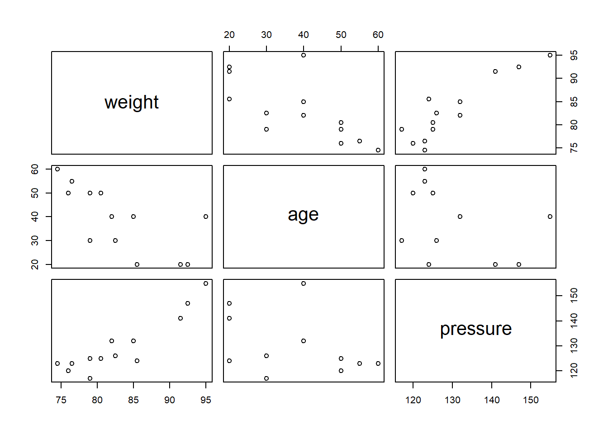
##
## Call:
## lm(formula = pressure ~ weight + age, data = blood)
##
## Residuals:
## Min 1Q Median 3Q Max
## -4.0404 -1.0183 0.4640 0.6908 4.3274
##
## Coefficients:
## Estimate Std. Error t value Pr(>|t|)
## (Intercept) -62.96336 16.99976 -3.704 0.004083 **
## weight 2.13656 0.17534 12.185 2.53e-07 ***
## age 0.40022 0.08321 4.810 0.000713 ***
## ---
## Signif. codes: 0 '***' 0.001 '**' 0.01 '*' 0.05 '.' 0.1 ' ' 1
##
## Residual standard error: 2.854 on 10 degrees of freedom
## Multiple R-squared: 0.9461, Adjusted R-squared: 0.9354
## F-statistic: 87.84 on 2 and 10 DF, p-value: 4.531e-07The regression function is
\[\hat y = -62.96336 + 2.13656 x_1+ 0.40022 x_2.\]
n = length(blood$weight)
X = cbind(intercept=rep(1,n),weight=blood$weight,age=blood$age)
C = solve(t(X)%*%X)
SSE = sum(lm.blood$residuals^2) # sum of squared errors
# SST = var(blood$pressure)*(n-1)
# SSR = SST-SSE
# Fstat = SSR/(3-1)/(SSE/(n-3))
cov = SSE/(n-3)*C
knitr::kable(cov, caption = "Estimated Covariance Matrix")| intercept | weight | age | |
|---|---|---|---|
| intercept | 288.991861 | -2.9499280 | -1.1174334 |
| weight | -2.949928 | 0.0307450 | 0.0102176 |
| age | -1.117433 | 0.0102176 | 0.0069243 |
Similarly to the simple linear model, we can construct the confidence intervals and prediction intervals for \(E[y]\) and \(y\), respectively.
newdata = data.frame(
age = rep(31,100),
weight = seq(70,100,length.out = 100)
)
CI = predict(lm.blood,newdata,interval = "confidence")
Pred = predict(lm.blood,newdata,interval = "prediction")
par(mar=c(4,4,2,1))
matplot(newdata$weight,cbind(CI,Pred[,-1]),type="l",
lty = c(1,5,5,2,2),
col=c("blue","red","red","brown","brown"),lwd=2,
xlab="Weight",ylab="Pressure",main = "Age = 31")
legend(70,160,c("Fitted","Confidence","Prediction"),
lty = c(1,5,2),col=c("blue","red","brown"))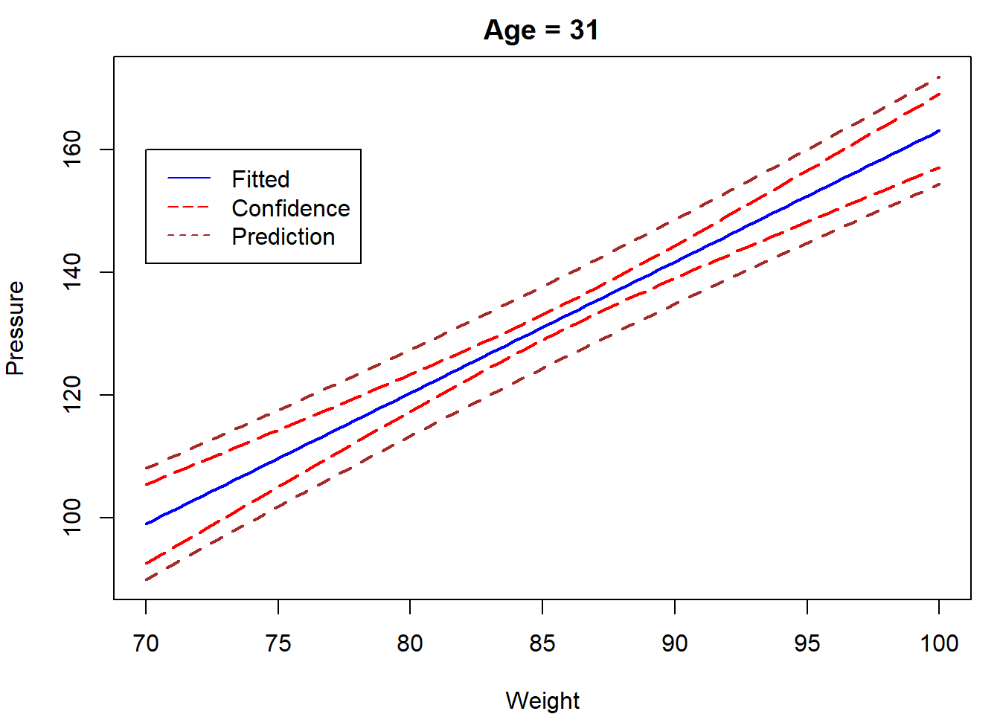
newdata = data.frame(
weight = rep(85,41),
age = seq(20,60)
)
CI = predict(lm.blood,newdata,interval = "confidence")
Pred = predict(lm.blood,newdata,interval = "prediction")
par(mar=c(4,4,2,1))
matplot(newdata$age,cbind(CI,Pred[,-1]),type="l",
lty = c(1,5,5,2,2),
col=c("blue","red","red","brown","brown"),lwd=2,
xlab="Age",ylab="Pressure",main = "Weight = 85")
legend(20,150,c("Fitted","Confidence","Prediction"),
lty = c(1,5,2),col=c("blue","red","brown"))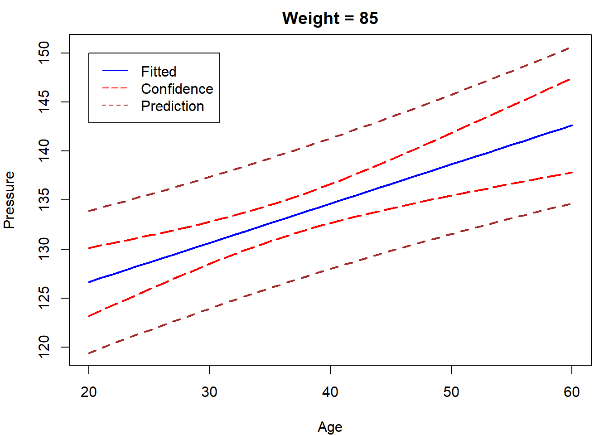
4.3 线性模型的推广
Inherently Linear models:
\[\begin{align*} f(y) &= \beta_0+\beta_1 g_1(x_1,\dots,x_{p-1})+\dots\\&+\beta_{k-1} g_{k-1}(x_1,\dots,x_{p-1})+\epsilon \end{align*}\]
Let \(y^*=f(y),\ x_i^*=g_i(x_1,\dots,x_{p-1})\). The transformed model is linear
\[y^*=\beta_0+\beta_1 x_1^*+\dots+\beta_{k-1} x_{k-1}^{*}+\epsilon.\]
Below are some examples.
- Polynomial models:
\[y = \beta_0+\beta_1x+\beta_2x^2+\beta_{p-1}x^p+\epsilon\]
- Interaction models:
\[y = \beta_0+\beta_1x_1+\beta_2x_2^2+\beta_{3}x_1x_2+\epsilon\]
- Multiplicative models:
\[y = \gamma_1X_1^{\gamma_2}X_2^{\gamma_3}\epsilon^*\]
- Exponential models:
\[y = \exp\{\beta_0+\beta_1x_1+\beta_2x_2\}+\epsilon^*\]
- Reciprocal models:
\[y=\frac{1}{\beta_0+\beta_1x+\beta_2x^2+\beta_{p-1}x^p+\epsilon}\]
- Semilog models:
\[y = \beta_0+\beta_1\log(x)+\epsilon\]
- Logit models:
\[\log\left(\frac{y}{1-y}\right) = \beta_0+\beta_1 x+\epsilon\]
- Probit models: \(\Phi^{-1}(y) = \beta_0+\beta_1 x+\epsilon\), where \(\Phi\) is the CDF of \(N(0,1)\).
4.4 回归诊断
4.4.1 动机
先考虑这样一个例子：
Anscombe在1973年构造了4组数据，每组数据都是由11对点\((x_i,y_i)\)组成，试分析4组数据是否通过回归方程的检验。
| x1 | x2 | x3 | x4 | y1 | y2 | y3 | y4 |
|---|---|---|---|---|---|---|---|
| 10 | 10 | 10 | 8 | 8.04 | 9.14 | 7.46 | 6.58 |
| 8 | 8 | 8 | 8 | 6.95 | 8.14 | 6.77 | 5.76 |
| 13 | 13 | 13 | 8 | 7.58 | 8.74 | 12.74 | 7.71 |
| 9 | 9 | 9 | 8 | 8.81 | 8.77 | 7.11 | 8.84 |
| 11 | 11 | 11 | 8 | 8.33 | 9.26 | 7.81 | 8.47 |
| 14 | 14 | 14 | 8 | 9.96 | 8.10 | 8.84 | 7.04 |
回归结果如下所示，从中发现这四组数据得到的回归结果非常相似，各项检验也是显著的。这是否意味着所建立的回归模型都是合理的呢？
coef.list = data.frame()
for(i in 1:4)
{
ff = as.formula(paste0("y",i,"~","x",i))
lmi = lm(ff,data = anscombe)
slmi = summary(lmi)
pvalue = 1-pf(slmi$fstatistic[1],slmi$fstatistic[2],slmi$fstatistic[3])
df = as.data.frame(cbind(slmi$coef,p_value = c(pvalue,NA)))
row.names(df)[1] = paste0(row.names(df)[1],i)
coef.list = rbind(coef.list,df)
}
knitr::kable(coef.list,caption = "四种情况的回归结果，最后一列为F检验p值")| Estimate | Std. Error | t value | Pr(>|t|) | p_value | |
|---|---|---|---|---|---|
| (Intercept)1 | 3.0000909 | 1.1247468 | 2.667348 | 0.0257341 | 0.0021696 |
| x1 | 0.5000909 | 0.1179055 | 4.241455 | 0.0021696 | NA |
| (Intercept)2 | 3.0009091 | 1.1253024 | 2.666758 | 0.0257589 | 0.0021788 |
| x2 | 0.5000000 | 0.1179637 | 4.238590 | 0.0021788 | NA |
| (Intercept)3 | 3.0024545 | 1.1244812 | 2.670080 | 0.0256191 | 0.0021763 |
| x3 | 0.4997273 | 0.1178777 | 4.239372 | 0.0021763 | NA |
| (Intercept)4 | 3.0017273 | 1.1239211 | 2.670763 | 0.0255904 | 0.0021646 |
| x4 | 0.4999091 | 0.1178189 | 4.243028 | 0.0021646 | NA |
答案是否定的！不妨画出原始数据与回归直线。从中发现， 第一幅图用该线性回归方程较为合适，但其它三幅图则不然。
par(mfrow = c(2,2),mar=c(4,4,1,1)+.1,oma=c(0,0,2,0))
for(i in 1:4)
{
ff = as.formula(paste0("y",i,"~","x",i))
lmi = lm(ff,data = anscombe)
plot(ff,data = anscombe,col="red",pch = 21,bg="orange",
cex = 1.2,xlim=c(3,19),ylim=c(3,13))
abline(coef(lmi),col="blue")
}图 4.2: 回归直线
library(ggplot2)
rn = colnames(anscombe)
df <- data.frame(
type = rep(rn[1:4],each=nrow(anscombe)),
x = c(anscombe$x1,anscombe$x2,anscombe$x3,anscombe$x4),
y = c(anscombe$y1,anscombe$y2,anscombe$y3,anscombe$y4)
)
ggplot(df, aes(x, y, color=type)) +
geom_smooth(method=lm, se=F) +
geom_point() +
facet_wrap(vars(type))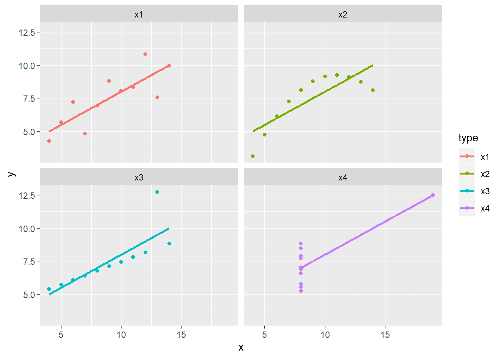
对于一元回归问题，我们或许可以通过画图观察自变量和因变量是否可以用线性模型刻画。但是，对于多元回归模型，试图通过画图的方式来判断线性关系是不可行的。那么，一般情况下，我们如何验证线性模型的合理性呢？这个时候就需要对所建立模型进行误差诊断，通过分析其残差来判断回归分析的基本假设是否成立。如发现果不成立，那么所有的区间估计、显著性检验都是不可靠的！
4.4.2 残差的定义和性质
回归分析都是基于误差项的假定进行的，最常见的假设
\[\epsilon_i\stackrel{iid}{\sim}N(0,\sigma^2).\]
如何考察数据基本上满足这些假设？自然从残差的角度来解决问题，这种方法叫残差分析。
研究那些数据对统计推断（估计、检验、预测和控制）有较大影响的点，这样的点叫做影响点。剔除那些有较强影响的异常/离群(outlier)数据，这就是所谓的影响分析(influence analysis).
残差的定义为
\[\hat\epsilon = Y-\hat Y\]
残差的性质如下：
定理 4.12 在假设\(\epsilon\sim N(0,\sigma^2I_n)\)下，
\(\hat\epsilon \sim N(0,\sigma^2(I_n-P))\)
\(Cov(\hat Y,\hat\epsilon) = 0\)
\(1^\top\hat\epsilon = 0\)
从中可以看出，\(Var[\hat\epsilon_i] = \sigma^2(1-p_{ii})\), 其中\(p_{ij}\)为投影矩阵的元素。该方差与\(\sigma^2\)以及\(p_{ii}\)有关，因此直接比较残差\(\hat\epsilon_i\)是不恰当的。
为此，将残差标准化：
\[\frac{\hat\epsilon_i-E[\hat\epsilon_i]}{\sqrt{Var[\hat\epsilon_i}]}= \frac{\hat\epsilon_i}{\sigma\sqrt{1-p_{ii}}},\ i=1,\dots,n\]
由于\(\sigma\)是未知的，所以用\(\hat\sigma\)来代替，其中\(\hat\sigma^2 = S_e^2/(n-p)\). 于是得到学生化(studentized residuals)
\[t_i = \frac{\hat\epsilon_i}{\hat{\sigma}\sqrt{1-p_{ii}}}\]
\(t_i\)虽然是\(\hat\epsilon_i\)的学生化，但它的分布并不服从\(t\)分布，它的分布通常比较复杂
\(t_1,\dots,t_n\)通常是不独立的
在实际应用中，可以近似认为：\(t_1,\dots,t_n\)是相互独立，服从\(N(0,1)\)分布
在实际应用中使用的残差图就是根据上述假定来对模型合理性进行诊断的。
4.4.3 残差图
残差图：以残差为纵坐标，其他的量（一般为拟合值\(\hat y_i\)）为横坐标的散点图。
由于可以近似认为：\(t_1,\dots,t_n\)是相互独立，服从\(N(0,1)\)分布，所以可以把它们看作来自\(N(0,1)\)的iid样本
根据标准正态的性质，大概有\(95\%\)的\(t_i\)落入区间\([-2,2]\)中。由于\(\hat Y\)与\(\hat\epsilon\)不相关，所以\(\hat y_i\)与学生化残差\(t_i\)的相关性也很小。
这样在残差图中，点\((\hat y_i,t_i),i=1,\dots,n\)大致应该落在宽度为4的水平带\(|t_i|\le 2\)的区域内，且不呈现任何趋势。
图 4.3: 正常的残差图

图 4.4: 误差随着横坐标的增加而增加
图 4.5: 误差随着横坐标的增加而减少
图 4.6: 误差中间大，两端小
图 4.7: 回归函数可能非线性，或者误差相关或者漏掉重要的自变量
图 4.8: 回归函数可能非线性
案例里面四组数据的残差图如下，从中发现只有第一组数据的残差较为合理。
par(mfrow = c(2,2),mar=c(4,4,1,1)+.1,oma=c(0,0,2,0))
for(i in 1:4)
{
ff = as.formula(paste0("y",i,"~","x",i))
lmi = lm(ff,data = anscombe)
plot(lmi$fitted.values,rstandard(lmi),pch = 21,bg="orange",
cex = 1.2,xlim=c(3,15),ylim=c(-4,4),
xlab = "fitted values",
ylab = "standardized residuals")
abline(h=c(-3,3),lty=2)
}图 4.9: 残差图
4.4.4 残差诊断的思路
如果残差图中显示非线性，可适当增加自变量的二次项或者交叉项。具体问题具体分析。
如果残差图中显示误差方差不相等(heterogeneity, 方差非齐性)，可以对变量做适当的变换，使得变换后的相应变量具有近似相等的方差(homogeneity, 方差齐性)。最著名的方法是Box-Cox变换，对因变量（响应变量）进行如下变换
\[Y{(\lambda)} = \begin{cases} \frac 1\lambda (Y^{\lambda}-1),&\ \lambda\neq 0\\ \log Y,&\ \lambda=0， \end{cases} \]
其中\(\lambda\)是待定的变换参数，可由极大似然法估计。注意此变换只是针对\(Y\)为正数的情况。如果出现负数时，需要作出调整。
在R中使用命令boxcox() (需要首先运行library(MASS))
详情见综述论文：
R. M. Sakia. The Box-Cox Transformation Technique: A Review. The Statistician, 41: 169-178, 1992.
4.4.5 案例分析：基于Box-Cox变换
已知某公司从2000年1月至2005年5月的逐月销售量，利用所学的统计知识对所建立的模型进行诊断。
sales<-c(154,96,73,49,36,59,95,169,210,278,298,245,
200,118,90,79,78,91,167,169,289,347,375,
203,223,104,107,85,75,99,135,211,335,460,
488,326,518,404,300,210,196,186,247,343,
464,680,711,610,613,392,273,322,189,257,
324,404,677,858,895,664,628,308,324,248,272)
X<-1:length(sales)
plot(X,sales,type="b",main="Original values",ylab="sales")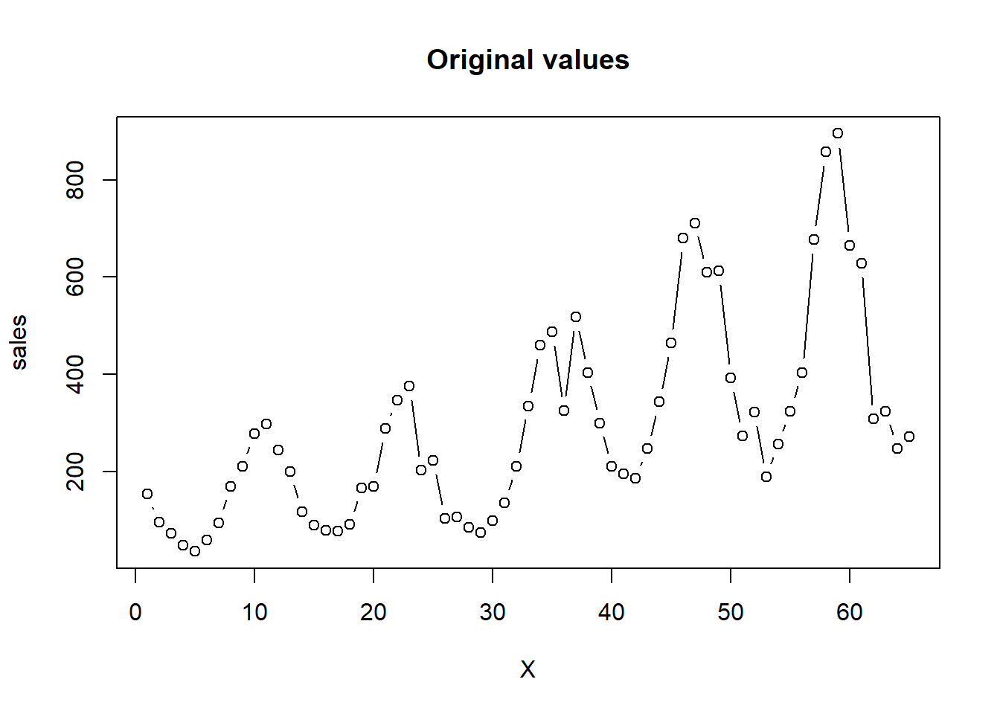
对原始数据跑回归，得到如下结果
##
## Call:
## lm(formula = sales ~ X)
##
## Residuals:
## Min 1Q Median 3Q Max
## -262.57 -123.80 -28.58 97.11 419.31
##
## Coefficients:
## Estimate Std. Error t value Pr(>|t|)
## (Intercept) 64.190 39.683 1.618 0.111
## X 6.975 1.045 6.672 7.43e-09 ***
## ---
## Signif. codes: 0 '***' 0.001 '**' 0.01 '*' 0.05 '.' 0.1 ' ' 1
##
## Residual standard error: 158.1 on 63 degrees of freedom
## Multiple R-squared: 0.414, Adjusted R-squared: 0.4047
## F-statistic: 44.52 on 1 and 63 DF, p-value: 7.429e-09残差图如下，发现异方差情形。
plot(predict(model1),rstandard(model1),main="Standardized Residuals",
xlab="Fitted values",ylab="residual values")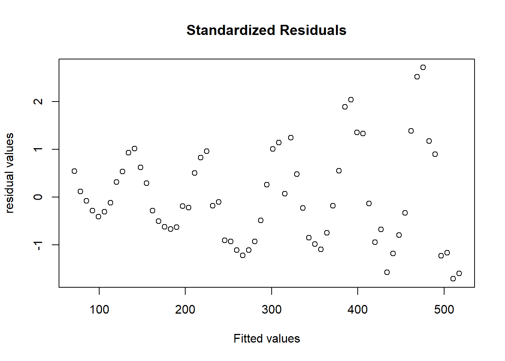
进行Box-Cox变换前，通过寻找似然函数最大值求出最优的\(\lambda\):
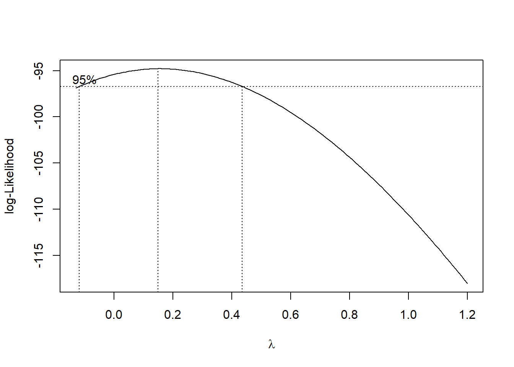
## The optimal lambda is 0.15得到最优\(\lambda=0.15\)后，对因变量进行Box-Cox变换，再一次跑回归，结果如下，从中发现回归系数和回归方程是显著的。
##
## Call:
## lm(formula = (sales^lambda - 1)/lambda ~ X)
##
## Residuals:
## Min 1Q Median 3Q Max
## -2.16849 -1.11715 0.03469 1.09524 1.86477
##
## Coefficients:
## Estimate Std. Error t value Pr(>|t|)
## (Intercept) 6.462756 0.307030 21.049 < 2e-16 ***
## X 0.061346 0.008088 7.585 1.9e-10 ***
## ---
## Signif. codes: 0 '***' 0.001 '**' 0.01 '*' 0.05 '.' 0.1 ' ' 1
##
## Residual standard error: 1.223 on 63 degrees of freedom
## Multiple R-squared: 0.4773, Adjusted R-squared: 0.469
## F-statistic: 57.53 on 1 and 63 DF, p-value: 1.902e-10比较变换之前和变换之后的残差图：
par(mfrow=c(1,2))
plot(predict(model1),rstandard(model1),main="before boxcox",
xlab="Fitted values",ylab="residual values",ylim = c(-3,3))
plot(predict(model2),rstandard(model2),main="after boxcox",
xlab="Fitted values",ylab="residual values",ylim = c(-3,3))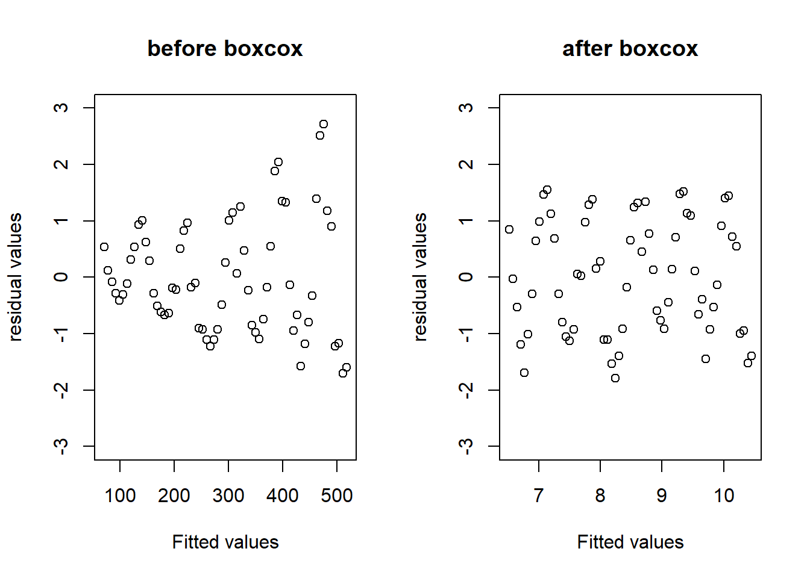
4.4.6 离群值
产生离群/异常值(outlier)的原因：
- 主观原因：收集和记录数据时出现错误
- 客观原因：重尾分布（比如，\(t\)分布）和混合分布
离群值的简单判断：
数据散点图
学生化残差图，如果\(|t_i|>3\) (或者2.5,2)，则对应的数据判定为离群值。
离群值的统计检验方法，M-估计(Maximum likelihood type estimators)
利用Cook距离，其定义为：
\[D_i = \frac{(\hat\beta-\hat\beta_{(i)})^\top X^\top X(\hat\beta-\hat\beta_{(i)}) }{p\hat\sigma^2},i=1,\dots,n,\]
其中\(\hat\beta_{(i)}\)为剔除第\(i\)个数据得到\(\beta\)的最小二乘估计
在R中用命令
cooks.distance()可以得到Cook统计量的值
如果发现特别大的\(D_i\)一定要特别注意：
检查原始数据是否有误，如有，改正后重新计算；否则，剔除对应的数据
如果没有足够理由剔除影响大的数据，就应该采取收集更多的数据或者采用更加稳健的方法以降低强影响数据对估计和推断的影响，从而得到比较稳定的回归方程。
下面通过两组数据比较离群值的影响，第二组数据在第一组数据上面添加了一个异常数据。观察发现，添加了一个异常数据导致回归系数有较大的变化。
lm1 = lm(y1~x1,data = anscombe)
x = c(anscombe$x1, 18) # 人为添加异常数据
y = c(anscombe$y1,30) # 人为添加异常数据
lm.xy = lm(y~x)
plot(x,y,pch = 21,bg=c(rep("black",11),"red"),ylim=c(0,50))
abline(coef(lm.xy),lty=2,col="red")
abline(coef(lm1),lty=2,col="blue")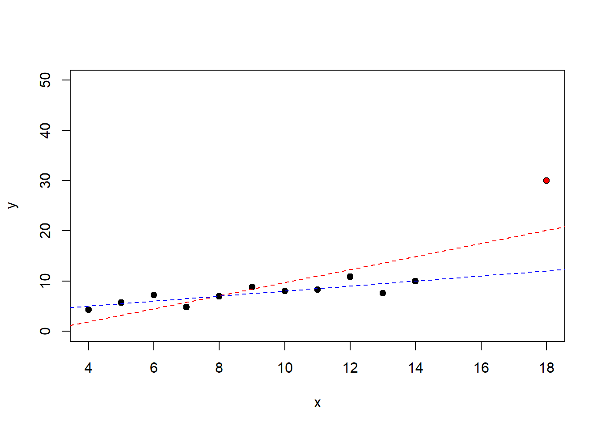
观察残差图和Cook距离，容易发现异常数据。
par(mfrow=c(1,2))
plot(c(fitted(lm1),fitted(lm.xy)),
c(rstandard(lm1),rstandard(lm.xy)),
ylim=c(-3,3),pch = c(rep(21,11),rep(22,12)),
bg = c(rep("blue",11),rep("red",12)),
xlab = "fitted values",
ylab="standardized residuals")
abline(h=c(-2,2),lty=2)
plot(lm.xy,4) #画出第二组数据的cook距离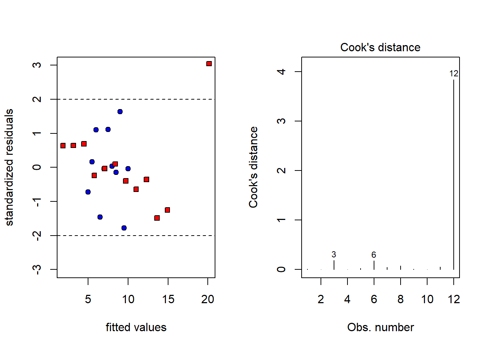
4.4.7 变量选择
常见的变量选择如下：
完全子集法
向前回归法（每步只能增加）
向后回归法（每步只能剔除）
逐步回归法（可剔除也可增加，详细见陈家鼎编著教材P208-214）
“添加”或者“删除”变量依赖某个准则，常见的准则有
- AIC准则(Akaike information criterion)：由日本统计学家Hirotugu Akaike提出并命名
\[AIC(A) = \ln Q(A) +\frac{\color{red} 2}{n} \#(A)\]
- BIC准则(Bayesian information criterion)：由Gideon E. Schwarz (1978, Ann. Stat.)提出
\[BIC(A) = \ln Q(A) +\frac{\color{red}{\log n}}{n} \#(A)\]
其中\(A\subset\{1,\dots,p-1\}\)，\(Q(A)\)为选择子集\(A\)中变量跑回归的残差平方和，\(\#(A)\)表示\(A\)中元素的个数。AIC/BIC越小越好。“添加”或者“剔除”变量操作取决于相应的AIC/BIC是否达到最小值。
下面通过一个例子展示如何进行逐步回归分析。
某种水泥在凝固时放出的热量\(Y\)与水泥中四种化学成分\(X_1\), \(X_2\), \(X_3\), \(X_4\)有关，现测得13组数据，如表所示。希望从中选出主要的变量，建立\(Y\)关于它们的线性回归方程。
cement=data.frame(
x1=c(7,1,11,11,7,11,3,1,2,21,1,11,10),
x2=c(26,29,56,31,52,55,71,31,54,47,40,66,68),
x3=c(6,15,8,8,6,9,17,22,18,4,23,9,8),
x4=c(60,52,20,47,33,22,6,44,22,26,34,12,12),
y=c(78.5,74.3,104.3,87.6,95.9,109.2,102.7,72.5,
93.1,115.9,83.8,113.3,109.4))
knitr::kable(cement)| x1 | x2 | x3 | x4 | y |
|---|---|---|---|---|
| 7 | 26 | 6 | 60 | 78.5 |
| 1 | 29 | 15 | 52 | 74.3 |
| 11 | 56 | 8 | 20 | 104.3 |
| 11 | 31 | 8 | 47 | 87.6 |
| 7 | 52 | 6 | 33 | 95.9 |
| 11 | 55 | 9 | 22 | 109.2 |
| 3 | 71 | 17 | 6 | 102.7 |
| 1 | 31 | 22 | 44 | 72.5 |
| 2 | 54 | 18 | 22 | 93.1 |
| 21 | 47 | 4 | 26 | 115.9 |
| 1 | 40 | 23 | 34 | 83.8 |
| 11 | 66 | 9 | 12 | 113.3 |
| 10 | 68 | 8 | 12 | 109.4 |
##
## Call:
## lm(formula = y ~ x1 + x2 + x3 + x4, data = cement)
##
## Residuals:
## Min 1Q Median 3Q Max
## -3.1750 -1.6709 0.2508 1.3783 3.9254
##
## Coefficients:
## Estimate Std. Error t value Pr(>|t|)
## (Intercept) 62.4054 70.0710 0.891 0.3991
## x1 1.5511 0.7448 2.083 0.0708 .
## x2 0.5102 0.7238 0.705 0.5009
## x3 0.1019 0.7547 0.135 0.8959
## x4 -0.1441 0.7091 -0.203 0.8441
## ---
## Signif. codes: 0 '***' 0.001 '**' 0.01 '*' 0.05 '.' 0.1 ' ' 1
##
## Residual standard error: 2.446 on 8 degrees of freedom
## Multiple R-squared: 0.9824, Adjusted R-squared: 0.9736
## F-statistic: 111.5 on 4 and 8 DF, p-value: 4.756e-07所有变量参与回归分析，得到如下结果。虽然回归方程整体检验是显著的，但是大部分系数的检验都是不显著的，因此需要进行变量选择。 R语言关键命令为
step(object, scope, scale = 0,
direction = c("both", "backward", "forward"),
trace = 1, keep = NULL, steps = 1000, k = 2, ...)- object: 初始回归模型，比如
object = lm(y=1,data=cement) - scope: 为逐步回归搜索区域，比如
scope = ~x1+x2+x3+x4 - trace: 表示是否保留逐步回归过程，默认保留
- direction: 搜索方向，默认为“both”
- k: 为AIC惩罚因子，即\(AIC(A) = \ln Q(A) +\frac{\color{red} k}{n} \#(A)\)，默认\(k=2\)，当\(k=\log n\)是为BIC准则。
逐步回归的筛选过程如下：
## Start: AIC=71.44
## y ~ 1
##
## Df Sum of Sq RSS AIC
## + x4 1 1831.90 883.87 58.852
## + x2 1 1809.43 906.34 59.178
## + x1 1 1450.08 1265.69 63.519
## + x3 1 776.36 1939.40 69.067
## <none> 2715.76 71.444
##
## Step: AIC=58.85
## y ~ x4
##
## Df Sum of Sq RSS AIC
## + x1 1 809.10 74.76 28.742
## + x3 1 708.13 175.74 39.853
## <none> 883.87 58.852
## + x2 1 14.99 868.88 60.629
## - x4 1 1831.90 2715.76 71.444
##
## Step: AIC=28.74
## y ~ x4 + x1
##
## Df Sum of Sq RSS AIC
## + x2 1 26.79 47.97 24.974
## + x3 1 23.93 50.84 25.728
## <none> 74.76 28.742
## - x1 1 809.10 883.87 58.852
## - x4 1 1190.92 1265.69 63.519
##
## Step: AIC=24.97
## y ~ x4 + x1 + x2
##
## Df Sum of Sq RSS AIC
## <none> 47.97 24.974
## - x4 1 9.93 57.90 25.420
## + x3 1 0.11 47.86 26.944
## - x2 1 26.79 74.76 28.742
## - x1 1 820.91 868.88 60.629逐步回归剔除了第三个变量，得到的回归结果如下，从中发现变量\(X_4\)是不显著的。为此，我们手工剔除该变量，以改进模型。
##
## Call:
## lm(formula = y ~ x4 + x1 + x2, data = cement)
##
## Residuals:
## Min 1Q Median 3Q Max
## -3.0919 -1.8016 0.2562 1.2818 3.8982
##
## Coefficients:
## Estimate Std. Error t value Pr(>|t|)
## (Intercept) 71.6483 14.1424 5.066 0.000675 ***
## x4 -0.2365 0.1733 -1.365 0.205395
## x1 1.4519 0.1170 12.410 5.78e-07 ***
## x2 0.4161 0.1856 2.242 0.051687 .
## ---
## Signif. codes: 0 '***' 0.001 '**' 0.01 '*' 0.05 '.' 0.1 ' ' 1
##
## Residual standard error: 2.309 on 9 degrees of freedom
## Multiple R-squared: 0.9823, Adjusted R-squared: 0.9764
## F-statistic: 166.8 on 3 and 9 DF, p-value: 3.323e-08剔除第四个变量后的结果如下，所有的检验都是显著的，残差诊断也合理。
##
## Call:
## lm(formula = y ~ x1 + x2, data = cement)
##
## Residuals:
## Min 1Q Median 3Q Max
## -2.893 -1.574 -1.302 1.363 4.048
##
## Coefficients:
## Estimate Std. Error t value Pr(>|t|)
## (Intercept) 52.57735 2.28617 23.00 5.46e-10 ***
## x1 1.46831 0.12130 12.11 2.69e-07 ***
## x2 0.66225 0.04585 14.44 5.03e-08 ***
## ---
## Signif. codes: 0 '***' 0.001 '**' 0.01 '*' 0.05 '.' 0.1 ' ' 1
##
## Residual standard error: 2.406 on 10 degrees of freedom
## Multiple R-squared: 0.9787, Adjusted R-squared: 0.9744
## F-statistic: 229.5 on 2 and 10 DF, p-value: 4.407e-09plot(predict(lm_final),rstandard(lm_final),main="new model",
xlab="Fitted values",ylab="residual values",ylim = c(-3,3))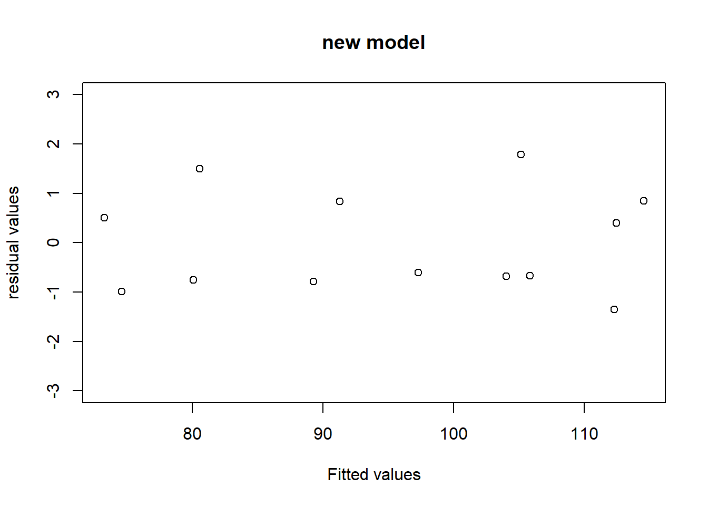
4.4.8 LASSO
现代变量选择方法：LASSO (Least Absolute Shrinkage & Selection Operator)是斯坦福大学统计系Tibshirani于1996年发表的著名论文“Regreesion shrinkage and selection via the LASSO” (Journal of Royal Statistical Society, Seriers B, 58, 267-288)中所提出的一种变量选择方法。
Professor Rob Tibshirani: https://statweb.stanford.edu/~tibs/
\[\hat\beta_{LASSO} = \arg\min ||Y-X\beta||^2 \text{ subject to } \sum_{i=0}^{p-1}|\beta_i|\le t,\]
等价于
\[\hat\beta_{LASSO} = \arg\min ||Y-X\beta||^2+ \lambda\sum_{i=0}^{p-1}|\beta_i|.\]
在R语言中可以使用glmnet包来实施LASSO算法。
4.4.9 回归分析与因果分析
即使建立了回归关系式并且统计检验证明相关关系成立，也只能说明研究的变量是统计相关的，而不能就此断定变量之间有因果关系。
案例(Ice Cream Causes Polio)：小儿麻痹症疫苗发明前，美国北卡罗来纳州卫生部研究人员通过分析冰淇淋消费量和小儿麻痹症的关系发现当冰淇淋消费量增加时，小儿麻痹疾病也增加。州卫生部发生警告反对吃冰淇淋来试图阻止这种疾病的传播。
没有观察的混杂因素——温度
Polio and ice cream consumption both increase in the summertime. Summer is when the polio virus thrived.
图 4.10: The danger of mixing up causality and correlation
4.5 本章习题
习题 4.1 Consider the linear model
\[y_i=\beta_0+\beta_1x_i+\epsilon_i,\ \epsilon_i\stackrel{iid}{\sim} N(0,\sigma^2), i=1,\dots,n.\]Derive the maximum likelihood estimators (MLE) for \(\beta_0,\beta_1\). Are they consistent with the least square estimators (LSE)?
Derive the MLE for \(\sigma^2\) and look at its unbiasedness.
A very slippery point is whether to treat the \(x_i\) as fixed numbers or as random variables. In the class, we treated the predictors \(x_i\) as fixed numbers for sake of convenience. Now suppose that the predictors \(x_i\) are iid random variables (independent of \(\epsilon_i\)) with density \(f_X(x;\theta)\) for some parameter \(\theta\). Write down the likelihood function for all of our data \((x_i,y_i),i=1,\dots,n\). Derive the MLE for \(\beta_0,\beta_1\) and see whether the MLE changes if we work with the setting of random predictors?
习题 4.2 Consider the linear model without intercept
\[y_i = \beta x_i+\epsilon_i,\ i=1,\dots,n,\]
where \(\epsilon_i\) are independent with \(E[\epsilon_i]=0\) and \(Var[\epsilon_i]=\sigma^2\).Write down the least square estimator \(\hat \beta\) for \(\beta\), and derive an unbiased estiamtor for \(\sigma^2\).
For fixed \(x_0\), let \(\hat{y}_0=\hat\beta x_0\). Work out \(Var[\hat{y}_0]\).
习题 4.3 Case study: Genetic variability is thought to be a key factor in the survival of a species, the idea
being that “diverse” populations should have a better chance of coping with changing
environments. Table below summarizes the results of a study designed to test
that hypothesis experimentally. Two populations of fruit flies (Drosophila serrata)-one that was cross-bred (Strain A) and the other,
in-bred (Strain B)-were put into sealed containers where food and space were kept
to a minimum. Recorded every hundred days were the numbers of Drosophila alive
in each population.
| Date | Day number | Strain A | Strain B |
|---|---|---|---|
| Feb 2 | 0 | 100 | 100 |
| May 13 | 100 | 250 | 203 |
| Aug 21 | 200 | 304 | 214 |
| Nov 29 | 300 | 403 | 295 |
| Mar 8 | 400 | 446 | 330 |
| Jun 16 | 500 | 482 | 324 |
Plot day numbers versus population sizes for Strain A and Strain B, respectively. Does the plot look linear? If so, please use least squares to figure out the coefficients and their standard errors, and plot the two regression lines.
Let \(\beta_1^A\) and \(\beta_1^B\) be the true slopes (i.e., growth rates) for Strain A and Strain B, respectively. Assume the population sizes for the two strains are independent. Under the same assumptions of \(\epsilon_i\stackrel{iid}{\sim} N(0,\sigma^2)\) for both strains, do we have enough evidence here to reject the null hypothesis that \(\beta_1^A\le \beta_1^B\) (significance level \(\alpha=0.05\))? Or equivalently, do these data support the theory that genetically mixed populations have a better chance of survival in hostile environments. (提示：仿照方差相同的两个正态总体均值差的假设检验，构造相应的t检验统计量)
Write down the normal equations for the simple linear model via the matrix formalism.
Solve the normal equations by tha matrix approach and see whether the solutions agree with the earlier calculation derived in the simple linear models.
习题 4.6 (The QR Method) This problem outlines the basic ideas of an alternative method, the QR method, of finding the least squares estimate \(\hat \beta\). An advantage of the method is that it does not include forming the matrix \(X^\top X\), a process that tends to increase rounding error. The essential ingredient of the method is that if \(X_{n\times p}\) has \(p\) linearly independent columns, it may be factored in the form
\[\begin{align*} X\quad &=\quad Q\quad \quad R\\ n\times p &\quad n\times p\quad p\times p \end{align*}\]
where the columns of \(Q\) are orthogonal (\(Q^\top Q = I_p\)) and \(R\) is upper-triangular (\(r_{ij} = 0\), for \(i > j\)) and nonsingular. For a discussion of this decomposition and its relationship to the Gram-Schmidt process, see https://en.wikipedia.org/wiki/QR_decomposition.
Show that \(\hat \beta = (X^\top X)^{-1}X^\top Y\) may also be expressed as \(\hat \beta = R^{-1}Q^\top Y\), or \(R\hat \beta = Q^\top Y\). Indicate how this last equation may be solved for \(\hat \beta\) by back-substitution, using that \(R\) is upper-triangular, and show that it is thus unnecessary to invert \(R\).
Use the matrix formalism to find expressions for the least squares estimates of \(\beta_0\) and \(\beta_1\).
Find an expression for the covariance matrix of the estimates.
习题 4.8 Consider the simple linear model
\[y_i= \beta_0+\beta_1x_i+\epsilon_i,\ \epsilon_i\stackrel{iid}{\sim} N(0,\sigma^2).\]
Use the F-test method derived in the multiple linear model to test the hypothesis \(H_0:\beta_1=0\ vs.\ H_1:\beta_1\neq 0\), and see whether the F-test agrees with the earlier t-test derived in the simple linear models.习题 4.9 The following table shows the monthly returns of stock in Disney, MacDonalds, Schlumberger, and Haliburton for January through May 1998. Fit a multiple regression to predict Disney returns from those of the other stocks. What is the standard deviation of the residuals? What is \(R^2\)?
| Disney | MacDonalds | Schlumberger | Haliburton |
|---|---|---|---|
| 0.08088 | -0.01309 | -0.08463 | -0.13373 |
| 0.04737 | 0.15958 | 0.02884 | 0.03616 |
| -0.04634 | 0.09966 | 0.00165 | 0.07919 |
| 0.16834 | 0.03125 | 0.09571 | 0.09227 |
| -0.09082 | 0.06206 | -0.05723 | -0.13242 |
Next, using the regression equation you have just found, carry out the predictions for January through May of 1999 and compare to the actual data listed below. What is the standard deviation of the prediction error? How can the comparison with the results from 1998 be explained? Is a reasonable explanation that the fundamental nature of the relationships changed in the one year period? (最后一问选做)
| Disney | MacDonalds | Schlumberger | Haliburton |
|---|---|---|---|
| 0.1 | 0.02604 | 0.02695 | 0.00211 |
| 0.06629 | 0.07851 | 0.02362 | -0.04 |
| -0.11545 | 0.06732 | 0.23938 | 0.35526 |
| 0.02008 | -0.06483 | 0.06127 | 0.10714 |
| -0.08268 | -0.09029 | -0.05773 | -0.02933 |
习题 4.10 Consider the multiple linear regression model \[ \boldsymbol{Y} = \boldsymbol{X}\boldsymbol {\beta} + \boldsymbol\epsilon, \] where \(\boldsymbol Y=(y_1,\dots,y_n)^\top\), \(\boldsymbol\beta=(\beta_0,\dots,\beta_{p-1})^\top\), \(\boldsymbol X\) is the \(n\times p\) design matrix, and \(\boldsymbol\epsilon=(\epsilon_1,\dots,\epsilon_n)^\top\). Assume that \(\mathrm{rank}(X)=p<n\), \(E[\boldsymbol\epsilon]=\boldsymbol 0\), and \(\mathrm{Var}[\boldsymbol\epsilon]= \sigma^2 I_n\) with \(\sigma>0\).
(a). Show that the covariance matrix of the least squares estimates is diagonal if and only if the columns of \(\boldsymbol{X}\), \(\boldsymbol{X}_1,\dots,\boldsymbol{X}_p\), are orthogonal, that is \(\boldsymbol{X}_i^\top \boldsymbol{X}_j=0\) for \(i\neq j\).
(b). Let \(\hat y_i\) and \(\hat\epsilon_i\) be the fitted values and the residuals, respectively. Show that \(n\sigma^2 = \sum_{i=1}^n \mathrm{Var}[\hat y_i]+\sum_{i=1}^n\mathrm{Var}[\hat\epsilon_i]\).
(c). Suppose further that \(\boldsymbol\epsilon\sim N(\boldsymbol 0,\sigma^2 I_n)\). Use the generalized likelihood ratio method to test the hypothesis
\[H_0: \beta_1=\beta_2=\dots=\beta_{p-1}=0\ vs.\ H_1:\sum_{i=1}^{p-1} \beta_i^2\neq0.\] If the coefficient of determination \(R^2=0.58\), \(p = 5\) and \(n=15\), is the null rejected at the significance level \(\alpha =0.05\)?
(\(F_{0.95}(4,10)=3.48,F_{0.95}(5,10)=3.33,t_{0.95}(10)=1.81\))